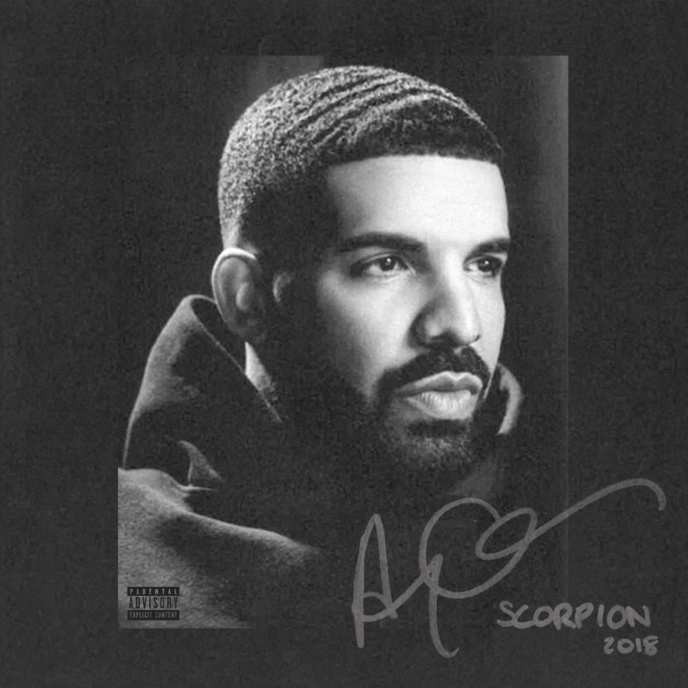
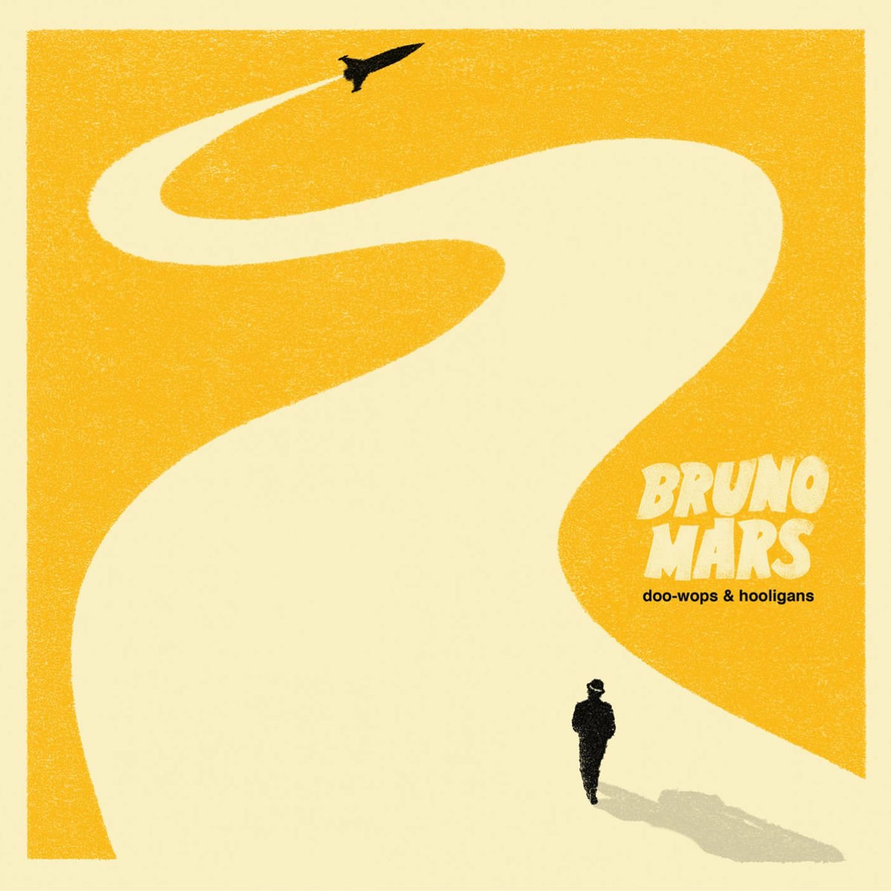
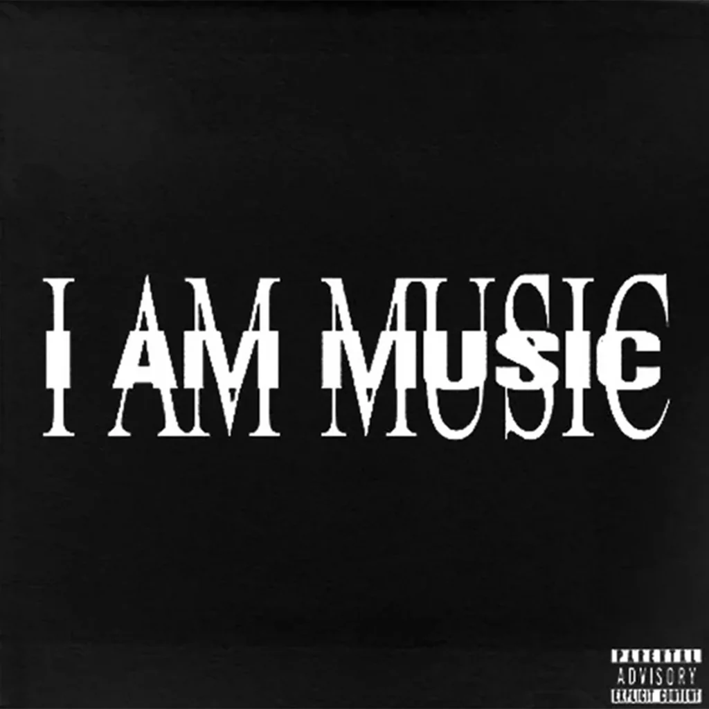

Muziek
R&B
Drake is one of the most iconic artists for young people because he represents a mix of relatability, emotional honesty, and modern success. Unlike many earlier rappers who focused mainly on toughness or luxury, Drake openly talks about feelings—love, heartbreak, insecurity, and ambition. This makes his music feel personal and easy for young listeners to connect with, especially in a time where expressing emotions is more accepted.


PARTYNEXTDOOR has become iconic to the youth in a quieter, more underground way compared to Drake. His influence comes from mood, atmosphere, and the way he captures late-night emotions. While he may not always be as visible in mainstream media, his sound has deeply shaped modern R&B and the vibe of an entire generation.
_____________________________________________________________________________________________
TRAP
Bruno Mars is iconic to the youth because of his ability to combine old-school influences with modern pop in a way that feels fresh and exciting. He takes inspiration from classic genres like funk, soul, and R&B, and blends them with today’s pop sound to create music that feels both nostalgic and new at the same time. This unique mix allows young listeners to enjoy sounds from the past while still feeling connected to current trends, making his music stand out in today’s pop scene.


Playboi Carti has had a strong impact on youth culture because he represents a shift toward individuality, rebellion, and emotional expression in modern music. His unconventional style—both musically, with experimental sounds and minimalistic lyrics, and visually, with bold fashion choices—encourages young people to embrace being different and reject traditional norms.